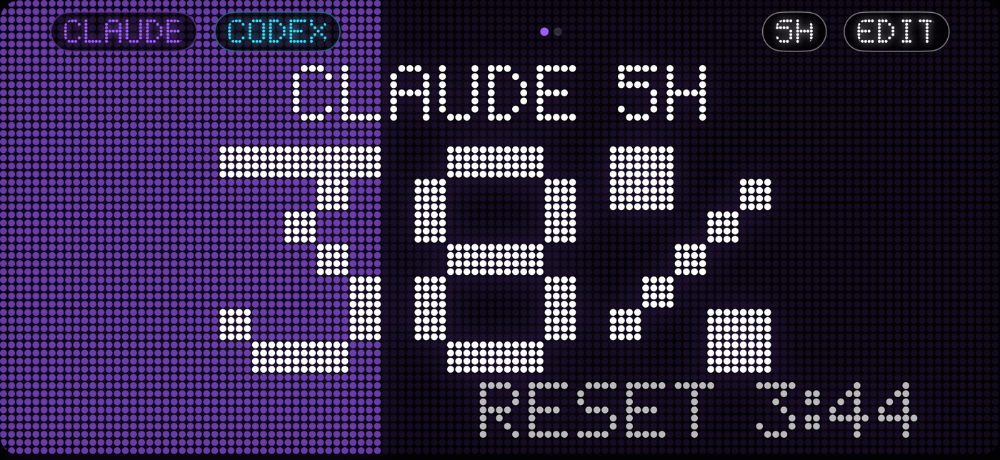

loading…
Claude Code, Codex, GitHub Copilot, Windsurf, Cursor, Gemini, Kiro, GLM, Kimi, MiniMax, Amp or any AI — how much of the 5-hour and 7-day limits you've used and when they reset. On Mac, Windows, Linux, iPhone, Android, Apple Watch, Wear OS, VS Code, Raycast and Stream Deck.

JSON on localhost:41777. Every app and script on your computer can read your usage.
Claude Code, Codex and Cursor can check your budget before starting a long task.
tokenbar, --json, --prompt for your shell prompt, get for scripts.
80%, 95% and reset events to Slack, Discord, Home Assistant or any URL.
Write a small JSON file and it shows up everywhere — phone, watch and widgets included.
The MCP server lets your AI check its own limit before a long task. Install the CLI first (command above), then click your tool. Cursor and VS Code install in one click; for the others, the installer writes the config for you with --add-to.
loading…